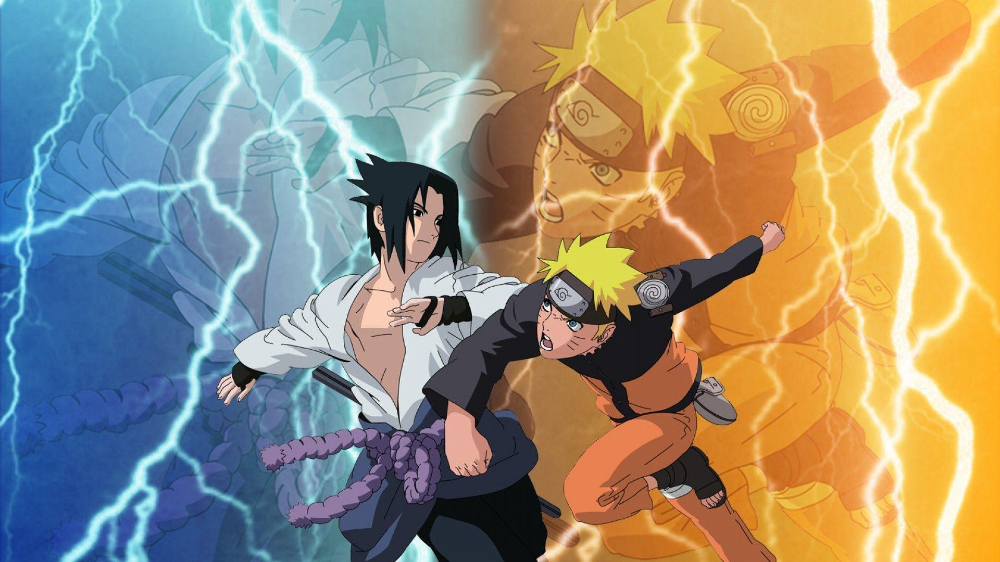
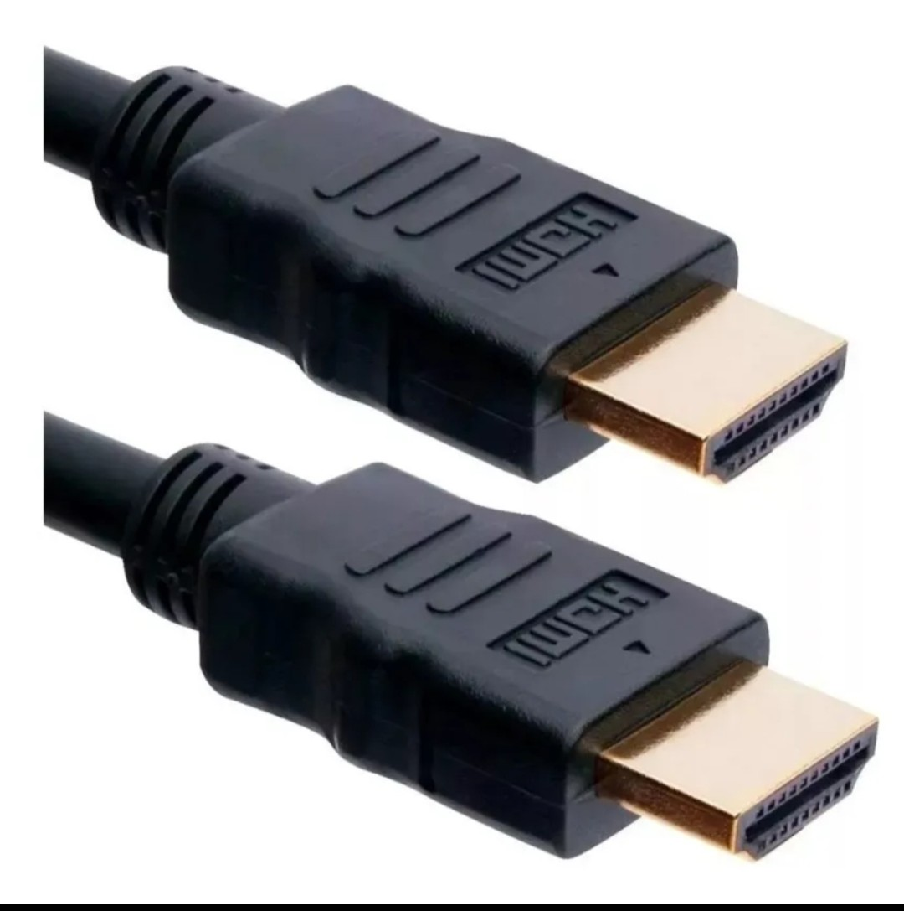

Início
Seja muito bem-vindo a página geek mais simples e aconchegante do Brasil! ficamos muito felizes em receber sua visita. Esperamos profundamente que aproveite sua navegação e aproveite para compartilhar essa página com seus queridos amigos e familiares, e também, não se esqueça de bater aquele papinho conosco!
Notícias
Confira as principais atualizações e discussões mais movimentadas:
OVA da 3ª temporada de OreGairu gera polêmica
A OVA lançada em 27 de abril no Japão, finalmente foi disponibilizada para assistir com legendas em português. No entanto, após muitas expectativas antes do lançamento, o esperado era de que a OVA adaptasse os pequenos contos da light novel de OreGairu Shin, focando na relação de Hikigaya Hachiman e Yukinoshita Yukino, trazendo uma conexão com o desfecho da 3ª temporada. Porém, as expectativas foram completamente por água a baixo (ou boa parte delas). Entenda o motivo!
Filmes lançados no mês de Abril que farão você 'quebrar' a cabeça
A Crunchyroll, uma das principais plataformas de streaming de animes do mundo, disponibilizou no dia 20 de Abril novos filmes. Entretanto, dois deles chamaram bastante atenção do público pela complexidade e por não ter necessariamente uma ordem, isto é, primeiro ou segundo filme. Os títulos são (independente da ordem):
Final Fantasy VII Rebirth pode ter sua continuação alterada
Não é novidade que o final de FFVII Remake deixou tudo muito aberto! Pudemos testificar uma cena que pegou de surpresa os amantes da série. Diferente de FVII original (PlayStation - 1997) o final da primeira metade trouxe o retorno de um personagem muito querido que teve uma grande influência na vida do protagonista, Cloud Strife. O lançamento de FVII Rebirth está previsto entre Dezembro de 2023 e Março de 2024. Saiba mais!
Favoritos
Confira a lista dos 3 animes mais assistidos:
Naruto Shippuden
Mesmo entre uma grande seleção de animes, Naruto Shippuden (2007) ainda permanece no topo da lista de animes mais vistos do mundo. A continuação direta de Naruto (2002) propociona aos fãs novas aventuras no resgate por Sasuke Uchiha, um dos principais personagens, ao lado do protagonista Naruto Uzumaki e Sakura Haruno.
Leia maisAttack on Titan
Eren Jaeger, jurou exterminar todos os titãs do mundo que estão devorando a humanidade, a única esperança de vida é se esconder atrás das três grandes muralhas: Maria, Rose e Sina. Qual será o destino de Eren e todos do esquadrão de reconhecimento que se arriscam pra salvar as vidas?
Leia maisBlack Clover
Os personagens Asta e Yuno foram abandonados em uma igreja no mesmo dia. Yuno herdou poderes mágicos excepcionais, mas Asta, é exclusivamente o único desprovido desses poderes. Em um mundo onde magia é tudo, os dois embarcam em grandes aventuras em busca de um sonho em comum: tornar-se o Rei dos Feiticeiros.
Leia maisContato
Agende um bate papo conosco! Ah! E fique a vontade para sugestões, críticas e compartilhar novidades.